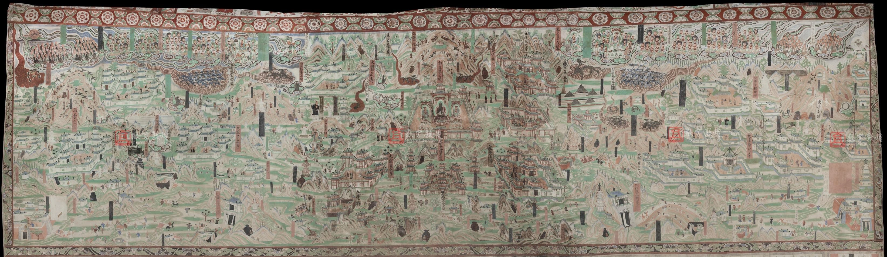
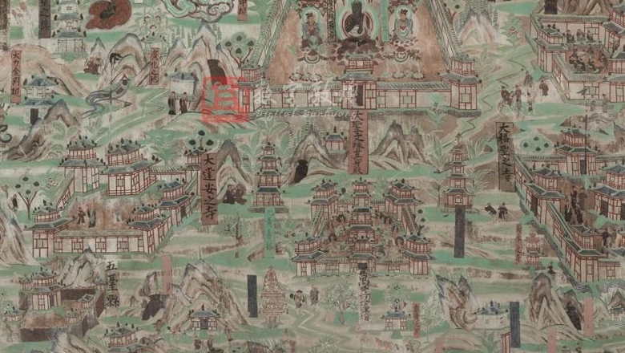
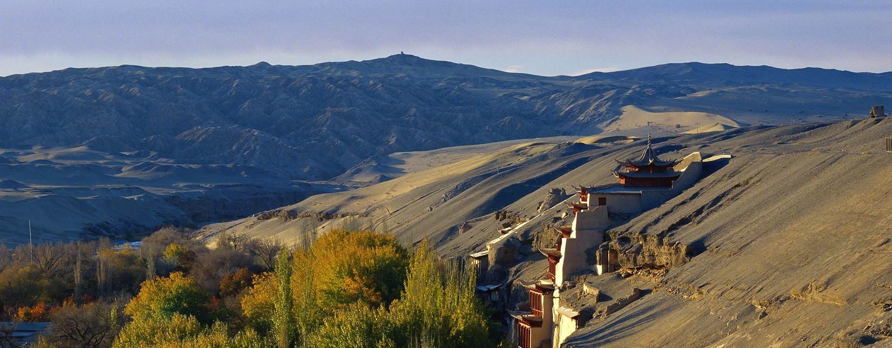

01 / 画卷缘起
把山河，
留在一面墙上。
在敦煌莫高窟第 61 窟的主室西壁，《五台山图》铺陈开来。山峰、寺院与道路彼此相连，让目光可以在一面墙上，走过一重又一重风景。
这座五代洞窟建于十世纪中期，文献中也称“文殊堂”。我们从图像本身出发，邀请你先看见细节，再理解它们如何组成画面。
061窟莫高窟 · 主室西壁
五代洞窟时代
13米《五台山图》长约 13 米，高约 3.6 米
01 / 画卷缘起
在敦煌莫高窟第 61 窟的主室西壁，《五台山图》铺陈开来。山峰、寺院与道路彼此相连，让目光可以在一面墙上，走过一重又一重风景。
这座五代洞窟建于十世纪中期，文献中也称“文殊堂”。我们从图像本身出发，邀请你先看见细节，再理解它们如何组成画面。
02 / 原位构视
按第 61 窟公开图像的墙面关系构成空间。
从主室中央，看向西壁上下层壁画。
进入后，单指或鼠标拖动转向 · 双指或点击后滚轮拉近 · 点击西壁进入细读
依据公开图像比例构成 · 非精确测绘复原03 / 画中漫游
让目光慢下来。
点击画中的圆点，或选择一条观看线索。

壁画暂未加载，请刷新页面重试。
拖动画面 · 点击后滚轮缩放 · 手机可双指缩放
图像 © 数字敦煌六处点位提供图像观察线索；人物、寺院与榜题的具体身份，以来源资料为准。
04 / 重见色彩
移动分隔线，观察不同处理阶段。
留下原图，也留下判断的空间。

原图记录数字调色实验保留来源图像中的斑驳与色彩。
壁画的斑驳，也是时间的一部分。从现状影像出发，经明暗调整、色彩增强，走向一场复色设想。
从画面中取意的五种色彩
色彩增强与复色推演属于数字视觉实验，不是历史原色复原。
本例未使用 AI 生成，也未依据颜料检测数据推断原色。原始图像始终保留，可通过滑块对照。

敦煌 · 莫高窟外景关于这次探索
本页为《千壁浮光》首版研讨演示。
图像保留来源水印。
壁画主图、局部裁切及洞窟资料：数字敦煌「莫高窟第061窟」。画中漫游呈现西壁上部《五台山图》，不包含下方佛传故事画。
数字敦煌 · 第061窟 ↗莫高窟外景：敦煌研究院「莫高窟」介绍页。
敦煌研究院 · 莫高窟 ↗图像权益归来源方所有。本地研讨演示使用；对外发布前，须按来源方规则落实图像使用条件。资料核对日期：2026年10月12日。
3D 场景将西壁公开图像贴附在简化的主室墙面关系中，用于观看位置与尺度的空间理解。现有素材没有整窟激光扫描和逐墙高清壁画图，故场景不是第 61 窟的精确测绘、扫描或历史复原。色彩过程分为现状影像、明暗调整、色彩增强和复色设想；后面三步是基于现状图像的数字视觉实验，不清除病害或补画，不等同于有材料学证据的修复，也不等同于真实历史原色。洞窟剖视暂时隐去顶部及部分墙体，以呈现空间关系。
项目名称取意于洞窟千壁与浮动光色。AI辅助页面设计、代码编写和讲解草稿；六个热点为图像观察线索，不对人物和寺院作无依据命名。文化资料链接与原图共同保留，便于进一步校对。
“原位构视”使用 Three.js 将西壁整幅公开图像放回简化主室关系中；不添加展框、展椅或独立展墙。场景为比例与观看关系示意，不主张是第 61 窟的精确三维复原。侧墙保持未考证留白，不放置移植来的装饰或壁画素材。
项目成员：田隽豪、詹敏欣、张琦、郭慧平。